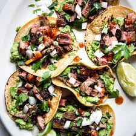

Tacos
The Taco was first introduced to the United States in 1905. Mexican migrants were coming in to work on railroads and other jobs and started to bring their delicious food with them.
Tacos were essentially a street food at this time since they were highly portable and cheap. In fact, Americans first became exposed to tacos through Mexican food carts in Los Angeles that were run by women called “chili queens”.
